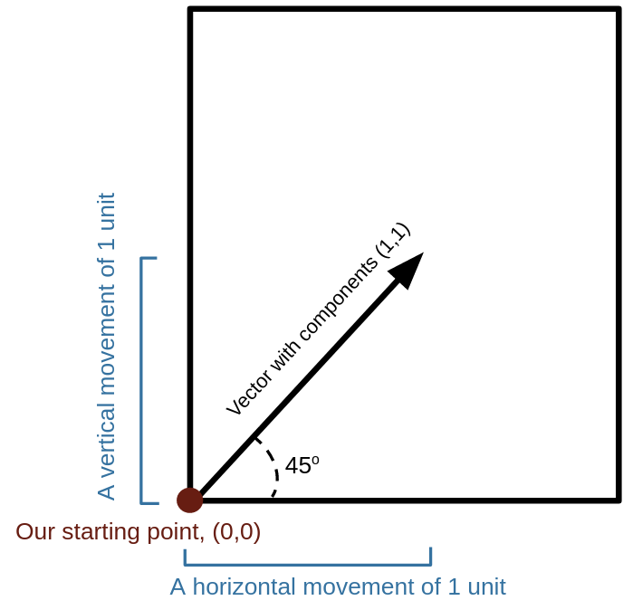

Section 1.4 Introduction to Quantum Computing
Subsection 1.4.1 Classical Computing
Before diving into the basics of quantum computing, we must first discuss how computing is done classically. On non-quantum computers, information is stored in strings of bits, where each bit is either a 0 or a 1. These strings of bits represent numbers in binary and they provide computers with instructions on what to do. The notable difference on a quantum computer is that quantum bits (qubits) exist in a superposition of states that allows them to be both a 0 and a 1 until they are measured and this superposition collapses. This unique property of qubits allows quantum computers to perform multiple processes simultaneously.
When describing the state of a qubit, instead of writing 0 and 1, we use \(\ket{0}\) and \(\ket{1}\text{.}\) These quantum states belong to a vector space, which means that multiplying states by a constant coefficient and adding states together will result in another valid quantum state. This is how a superposition is formed, by creating a linear combination of the states \(\ket{0}\) and \(\ket{1}\text{.}\)
Subsection 1.4.2 Vectors and Vector Spaces
A vector is an ordered list of numbers that is used to describe quantities with both magnitude and direction. One example of a vector is force, which has both a magnitude (how strong the force is) and a direction (the angle at which the force is being applied). Each vector has a dimension, which is the number of components that comprise it. It is customary to signify that something is a vector by either drawing an arrow on top of it or bolding it. If we have a vector \(x\text{,}\) we would write \(\vec{x}\) or \(\boldsymbol{x}\text{.}\) The number \(x_{n}\) is called the \(n\)-th component of \(\vec{x}\text{.}\)
The most typical use of a vector with \(n\) components is to describe a point in \(n\) dimensional space in reference to some starting point. For example, if you have a square piece of paper and label the bottom left corner with the starting point (0,0), then a vector with components (1,1) would represent moving one unit of measurement along the bottom of the paper and one unit of measurement along the side of the paper to reach a new point. This vector would have a direction of \(45^{\circ}\) and a magnitude of \(\sqrt{2}\) units (by the pythagorean theorem).

Vectors exist within vector spaces, which are sets that satisfy certain mathematical properties. The most common vector spaces we will deal with are \(\mathbb{R}^n\text{,}\) the set of all \(n\) dimensional vectors with real components, and \(\mathbb{C}^n\text{,}\) the set of all \(n\) dimensional vectors with complex components. Notice \(\mathbb{R}^n \subseteq \mathbb{C}^n\text{,}\) so we will usually work with \(\mathbb{C}^n\) for generality. All vector spaces have the same properties regardless of dimension. Here are the properties for an \(n\)-dimensional vector space:
1. Vector equality: \(\vec{x}=\vec{y}\) means \(x_{i}=y_{i}, i \in n. \)
2. Vector addition: \(\vec{x}+\vec{y}=\vec{z}\) means \(x_{i}+y_{i}=z_{i}, i \in n. \)
3. Scalar multiplication: \(a \vec{x} \equiv \big(a x_{1}, a x_{2},..., a x_{n}\big). \)
4. Negative of a vector: \(-\vec{x}=(-1) \vec{x} \equiv \big(-x_{1},-x_{2},...,-x_{n}\big). \)
5. Null vector: There exists a null vector \(\vec{0} \equiv (0,0,...,0). \)
If our vector components are all real numbers (i.e. the vector space exists in \(\mathbb{R}^n\) instead of \(\mathbb{C}^n\)), then the following properties also hold:
1. Addition of vectors is commutative: \(\vec{x}+\vec{y}=\vec{y}+\vec{x}. \)
2. Addition of vectors is associative: \((\vec{x}+\vec{y})+\vec{z}=\vec{x}+(\vec{y}+\vec{z}). \)
3. Scalar multiplication is distributive: \(a(\vec{x}+\vec{y})=a \vec{x}+a \vec{y},\) and \((a+b) \vec{x}=a \vec{x}+b \vec{x}\)
4. Scalar multiplication is associative: \((a b) \vec{x}=a(b \vec{x}).\)
For any vector space, one can find a subset of vectors which can be used to generate any other vector in the space through linear combinations (scalar multiplication and vector addition). The smallest set of vectors that fulfills this property is called the basis. In \(\mathbb{R}^{2}\text{,}\) we only need two vectors to produce the rest through linear combination. The standard basis, \(\mathcal{B},\) is:
\begin{equation*}
{\mathcal{B}}=\bigg\{ \{\widehat{\mathbf{x}}, \widehat{\mathbf{y}}\}= \begin{pmatrix} 1 \\ 0 \end{pmatrix}, \begin{pmatrix} 0 \\ 1 \end{pmatrix} \bigg\}
\end{equation*}
The \(\widehat{}\) symbol is used to denote that a vector is normal, which means that it has a length of 1. This property is extremely important to quantum mechanics and will be discussed more later.